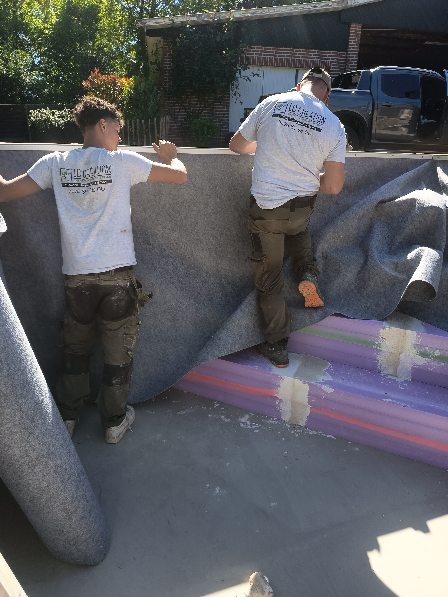
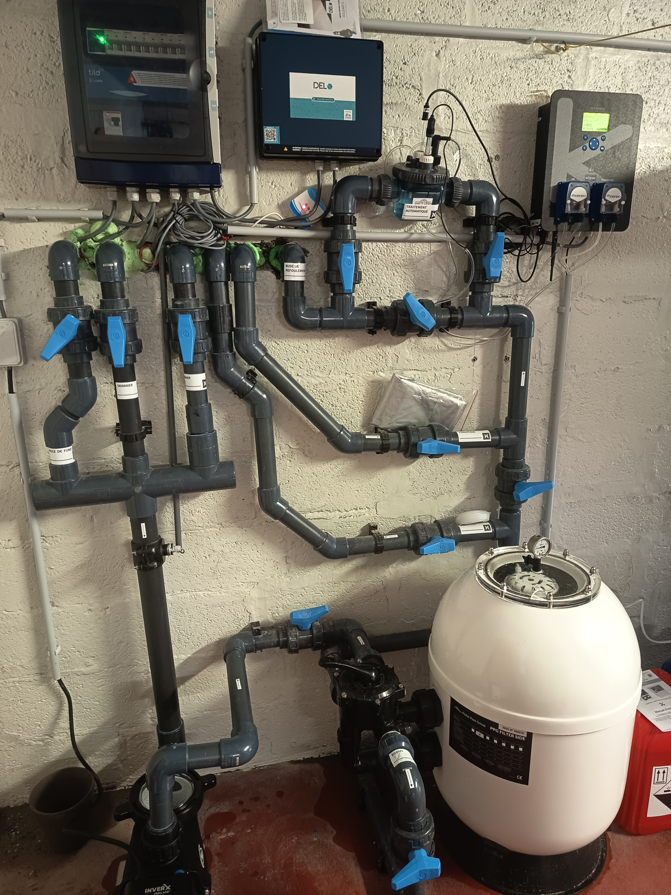
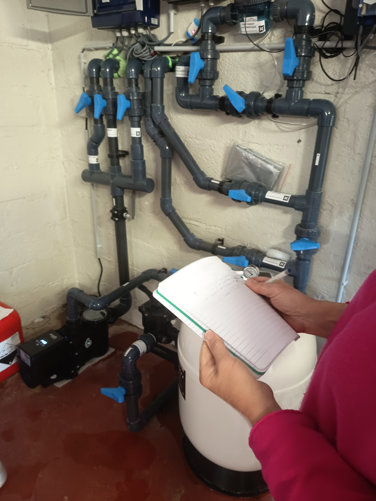
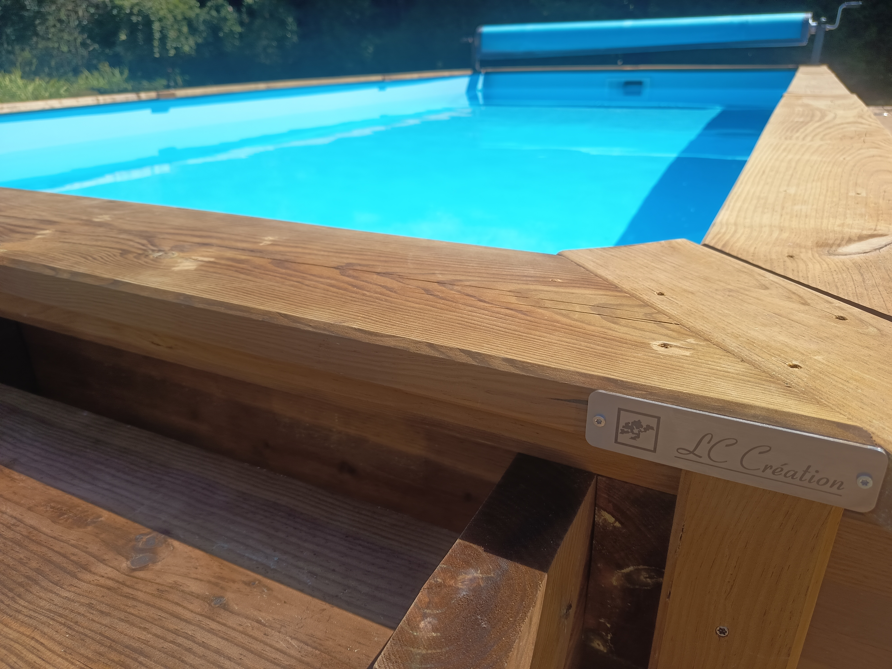
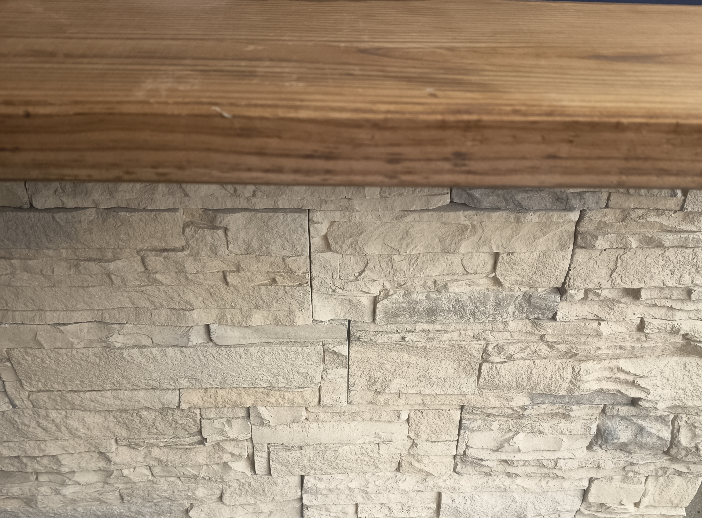
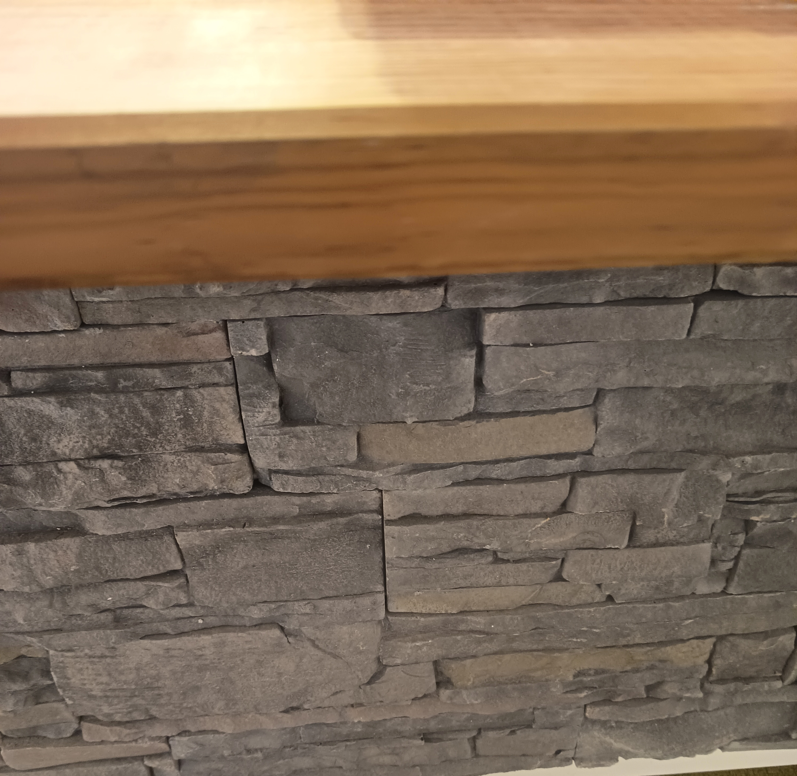
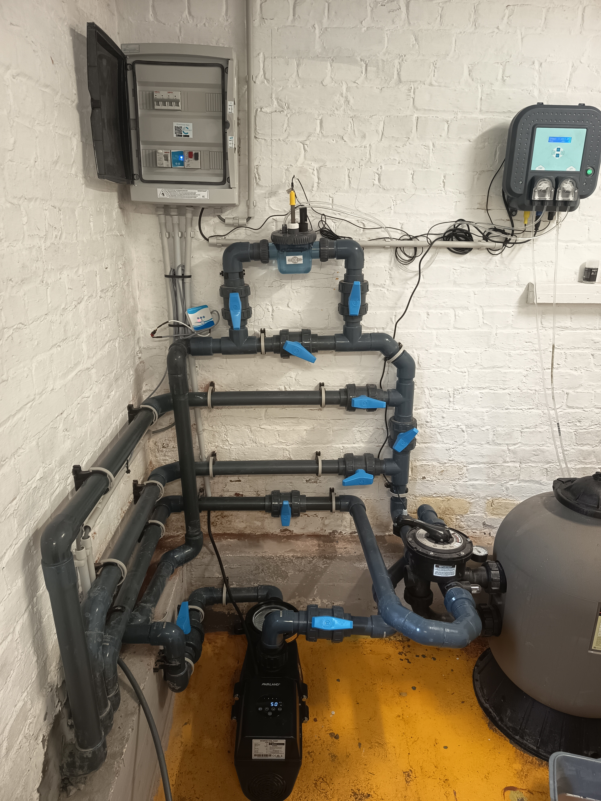
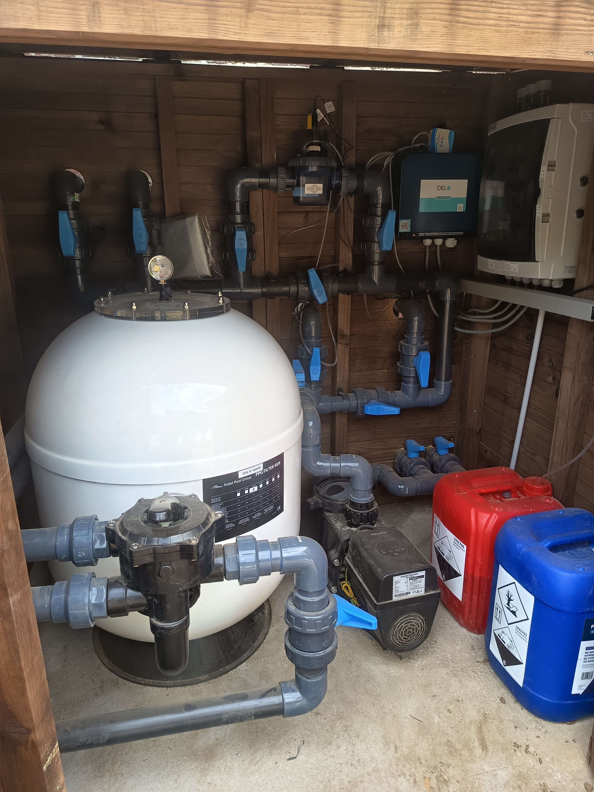

01
Implantation & terrassement
Le projet commence par l’implantation du bassin, la vérification des accès et l’ouverture du terrain aux dimensions prévues.
Piscines LC Création · Wallonie
Bois premium ou béton sur mesure. Une seule entreprise de la conception aux finitions.
Configurer ma piscineVotre projet commence par un premier échange.

Piscine bois 6 × 3 m
Terrassement, structure, filtration, pompe à chaleur, volet, pose et mise en service : une piscine complète, avec un seul interlocuteur du chantier à la prise en main.
*Simulation indicative. Exemple basé sur un financement de 25 000 € sur 60 mois. Mensualité, TAEG, coût total et acceptation dépendent de l’organisme prêteur et du profil de l’emprunteur.

Votre projet piscine bois 6 × 3 m
25 900 € TVAC
Parlons de votre terrain.
Photo : exemple de réalisation LC Création. Dimensions et équipements à confirmer pour votre projet. Conditions de l’offre détaillées sur cette page.
Votre projet en quelques minutes
Indiquez la taille souhaitée, le type d’implantation et les principales options. Cela nous permet de revenir vers vous avec une première orientation plus précise. Le configurateur présente d’autres dimensions que l’offre 6 × 3 m. Pour cette offre, utilisez le bouton « Demander une étude pour la 6 × 3 m ».
Le chantier
Nous vous montrons ce qui se passe réellement entre le premier traçage et la première baignade.
Le projet commence par l’implantation du bassin, la vérification des accès et l’ouverture du terrain aux dimensions prévues.
Après préparation du support, la structure bois est assemblée, mise à niveau et contrôlée avant la préparation intérieure.

Le bassin reçoit son feutre de protection sur le fond, les parois et les marches avant la pose du liner.

Le liner est posé, ajusté puis le remplissage commence progressivement pour mettre le revêtement en place correctement.

Pompe, filtre, vannes et équipements sont raccordés et organisés pour rester accessibles lors de l’entretien.

Une fois l’installation opérationnelle, nous expliquons au client la filtration, les vannes, le traitement et les réglages utiles au quotidien.

Habillage, margelles, volet et détails de finition viennent terminer l’intégration de la piscine dans son environnement.

Structure bois
La durabilité d’une piscine bois dépend autant de sa structure que de la façon dont elle est intégrée au terrain.

Implantation
Le bon choix dépend du terrain, de l’esthétique recherchée et du niveau des espaces existants.
Une solution simple lorsque le terrain et le projet s’y prêtent, avec une structure visible valorisée par l’habillage.
Très intéressante pour absorber une différence de niveau ou créer une piscine qui accompagne naturellement la pente.
Pour une intégration maximale avec terrasse et jardin, avec une attention particulière portée au drainage et aux protections.
Finitions visibles
Les parties visibles peuvent être adaptées à l’architecture de la maison et au style du jardin.

Chaleureux, naturel et parfaitement cohérent avec une terrasse ou un jardin paysager.

Un rendu lumineux et minéral, particulièrement adapté aux ambiances méditerranéennes.

Plus contemporaine et graphique, idéale avec des liners gris et des terrasses modernes.
Local technique
Il n’existe pas une seule bonne solution : l’implantation dépend de la distance au bassin, de l’espace disponible, de l’accès pour l’entretien et de l’intégration souhaitée.

Une solution organisée pour recevoir la filtration et les équipements prévus au devis.

Garage, annexe ou local existant lorsque l’implantation hydraulique et l’accès le permettent.

Équipements
Dimensionnée selon le bassin et organisée pour rester accessible lors de l’entretien.
Pour prolonger la saison et maintenir une température plus confortable lorsque les conditions le permettent.
Protection du bassin, limitation des pertes thermiques et confort d’utilisation selon la configuration choisie.
Pour profiter du bassin en soirée et mettre en valeur l’intégration dans le jardin.
Confort du bassin
Selon le projet, l’accès peut être intégré directement dans le bassin pour offrir une entrée plus naturelle, plus confortable et visuellement plus cohérente.
Mise en service & écolage
À la mise en service, nous vous expliquons le fonctionnement du bassin et les gestes utiles pour être autonome.
Transformation
Un chantier complet, du terrassement à la mise en eau.

Après le chantier
Nous expliquons les opérations courantes dès la mise en service : filtration, eau, nettoyage, couverture, hivernage et remise en route. L’objectif est que vous compreniez votre installation plutôt que de dépendre d’un technicien pour chaque réglage.
Questions fréquentes
Oui, selon la structure, le terrain et les protections prévues. L’intégration enterrée demande notamment une bonne gestion du drainage et des interfaces avec les terres.
L’entretien dépend surtout des parties visibles et de la finition choisie. Les zones non visibles sont traitées dans la conception de l’intégration au terrain.
Oui dans certains projets, à condition de valider les dimensions, niveaux, accès et exigences techniques avant le début de notre intervention.
La durée varie avec l’accès, le terrassement, la configuration et les finitions. Le planning est précisé dans le cadre de l’étude du projet.
Nous vous expliquons le fonctionnement de l’installation et les opérations d’entretien essentielles afin que vous puissiez utiliser le bassin en autonomie.
Votre projet
Envoyez-nous les grandes lignes du projet. Nous vous orientons vers la configuration la plus cohérente avec votre terrain, vos attentes et votre budget.